Why Pearson is not enough
A Pearson correlation matrix gives one scalar per pair of variables. Two numbers are discarded in that collapse:
- The shape of the association — linear, monotone non-linear, U-shaped, or irregular.
- The direction — whether is a smooth function of differs in general from whether is a smooth function of , because leverage and noise are directional.
janusplot() renders both recoveries visually for every
pair in a matrix layout, using proper mgcv::gam() fits (not
loess) so EDF, F-tests, and random effects are available.
Quick start
library(janusplot)
# Four numeric columns from mtcars (32 rows: small but illustrative)
janusplot(mtcars[, c("mpg", "hp", "wt", "qsec")])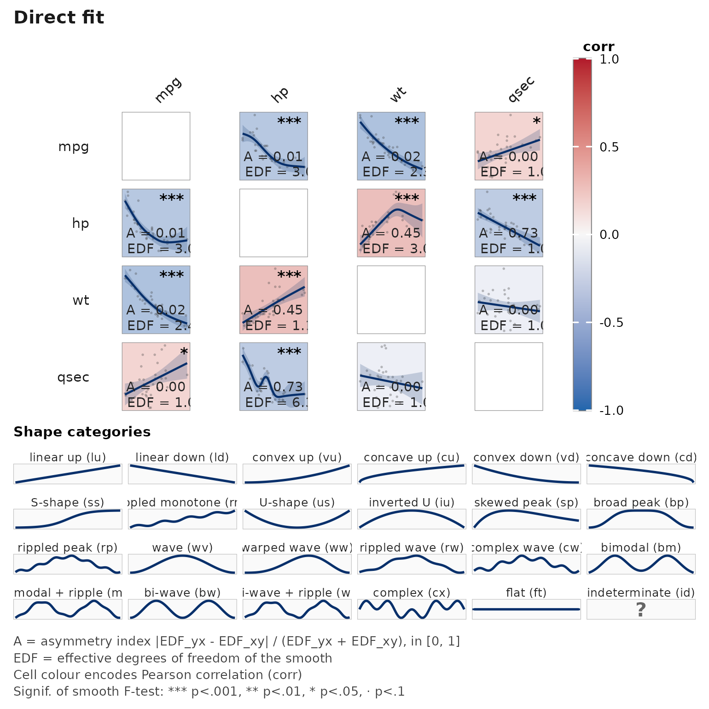
Each off-diagonal cell shows:
- raw scatter (light grey),
- the fitted spline (blue line) and 95% CI ribbon,
- EDF (effective degrees of freedom) in the bottom-right,
- n used in the bottom-left,
- a signif-glyph in the top-right (
***/**/*/·).
The cell fill is keyed to EDF: darker = more non-linear.
Non-linear detection
A synthetic quadratic + sinusoidal example. The matrix makes it obvious which variables are genuinely non-linearly related to which.
n <- 300
x1 <- runif(n, -3, 3)
x2 <- x1^2 + rnorm(n, sd = 0.6) # quadratic on x1
x3 <- sin(x1) + rnorm(n, sd = 0.4) # sinusoidal on x1
x4 <- rnorm(n) # independent
d <- data.frame(x1 = x1, x2 = x2, x3 = x3, x4 = x4)
janusplot(d)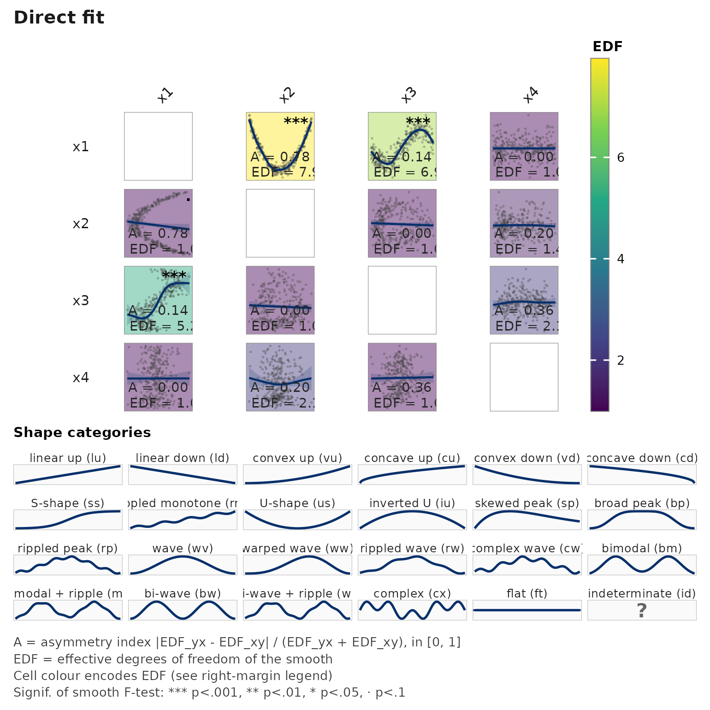
EDF for x2 ~ s(x1) and x3 ~ s(x1) should
clearly exceed 1; the cell fills reflect that. Cells involving
x4 should be close to EDF = 1 (linear / flat).
Asymmetry — a heteroscedastic example
When the noise scale depends on a predictor, the two directional smooths diverge: recovers the mean relationship; is distorted by the variance asymmetry.
n <- 400
x <- runif(n, 0, 5)
y <- 0.5 * x + rnorm(n, sd = 0.3 + 0.4 * x) # variance grows with x
d <- data.frame(x = x, y = y, z = rnorm(n))
janusplot(d)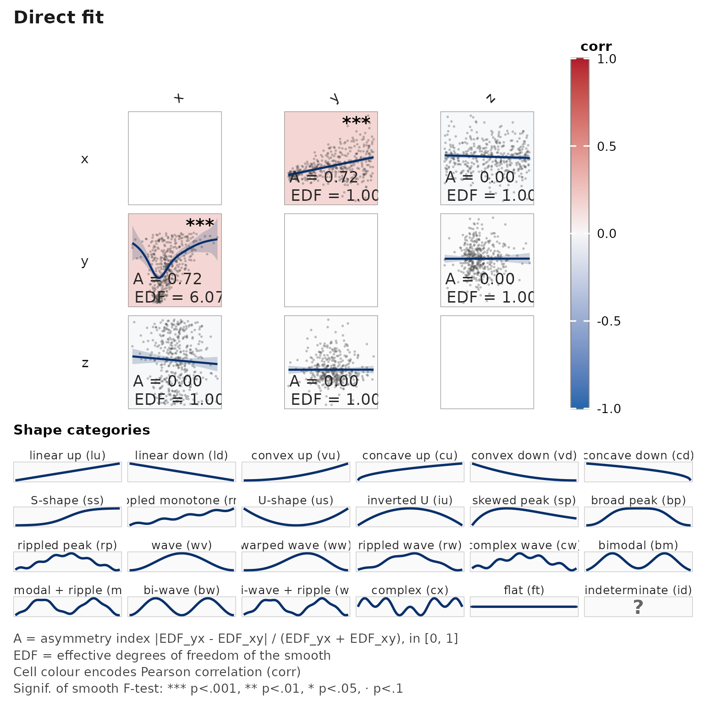
The A = ... label per cell reports the asymmetry index
,
shown by default in the bottom-left corner alongside
EDF = ....
Partial smooths (controlling for covariates)
Pass adjust = as a one-sided formula RHS to include
fixed covariates and/or random effects in every pairwise GAM.
library(palmerpenguins)
#>
#> Attaching package: 'palmerpenguins'
#> The following objects are masked from 'package:datasets':
#>
#> penguins, penguins_raw
pp <- na.omit(penguins)
# Without covariate
janusplot(pp[, c("bill_length_mm", "bill_depth_mm",
"flipper_length_mm", "body_mass_g")])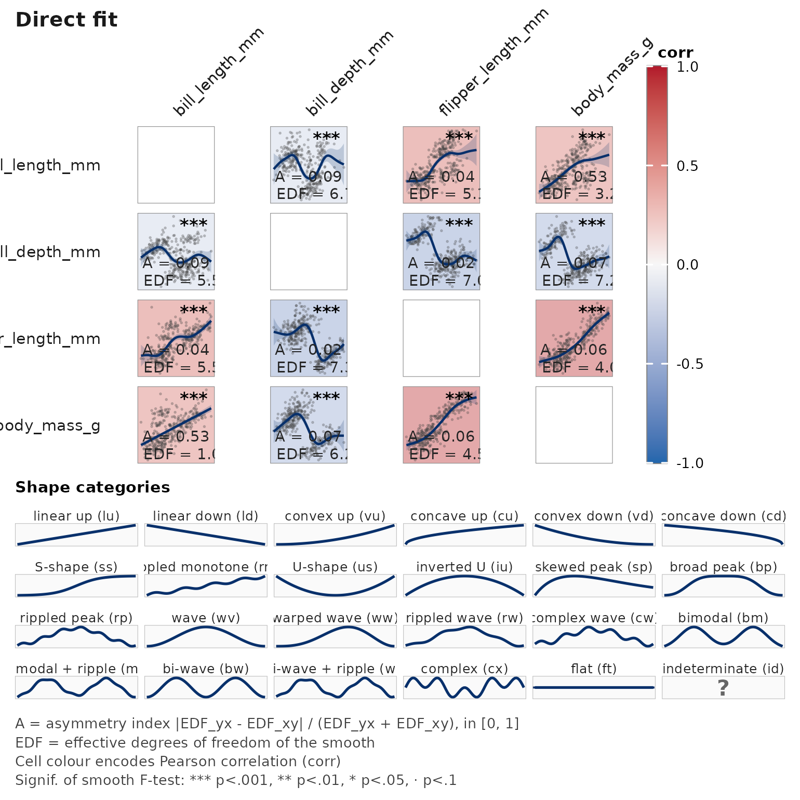
Changing the palette
The cell fill encodes the EDF (or deviance-explained) of the smooth
and is accompanied by a shared colourbar legend. Choose a palette with
palette =.
d <- data.frame(
x1 = runif(200, -3, 3),
x2 = rnorm(200),
x3 = rnorm(200)
)
d$x2 <- d$x1^2 + rnorm(200, sd = 0.8) # non-linear
janusplot(d, palette = "viridis") # default, colourblind-safe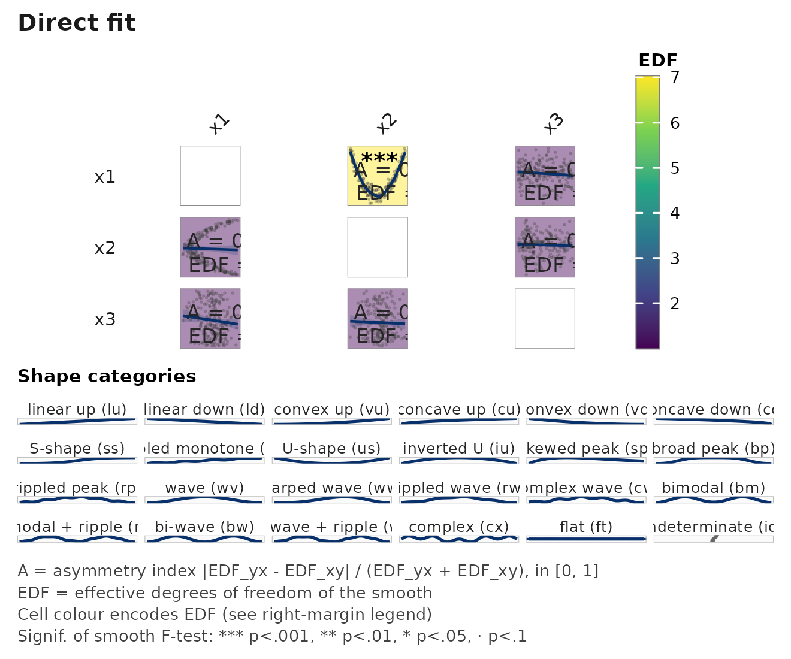
janusplot(d, palette = "RdYlBu") # diverging, colourblind-safe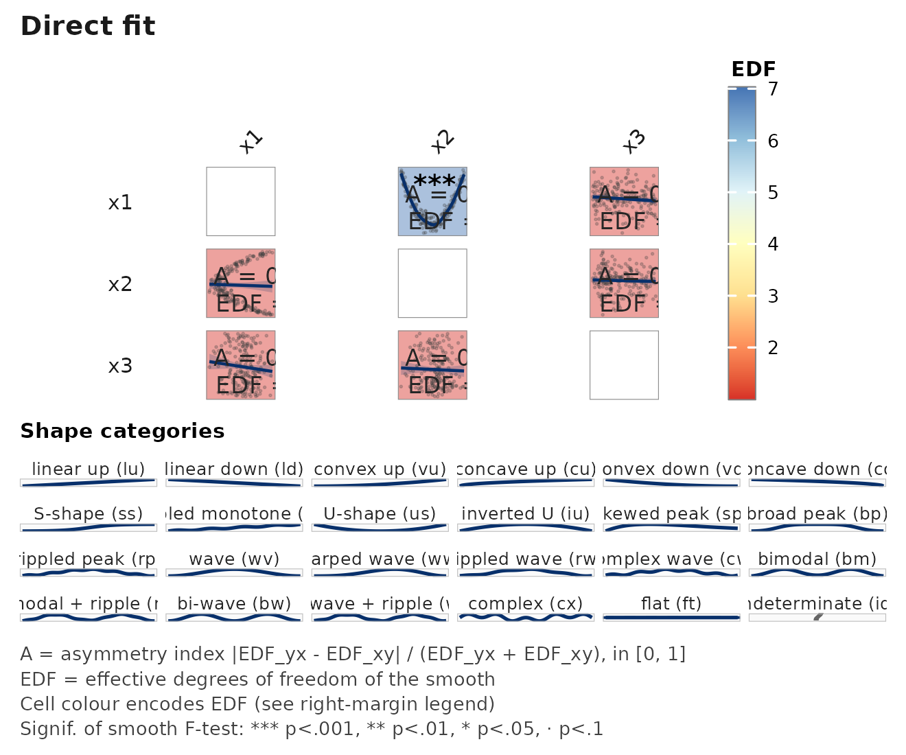
janusplot(d, palette = "turbo") # high-contrast, NOT colourblind-safe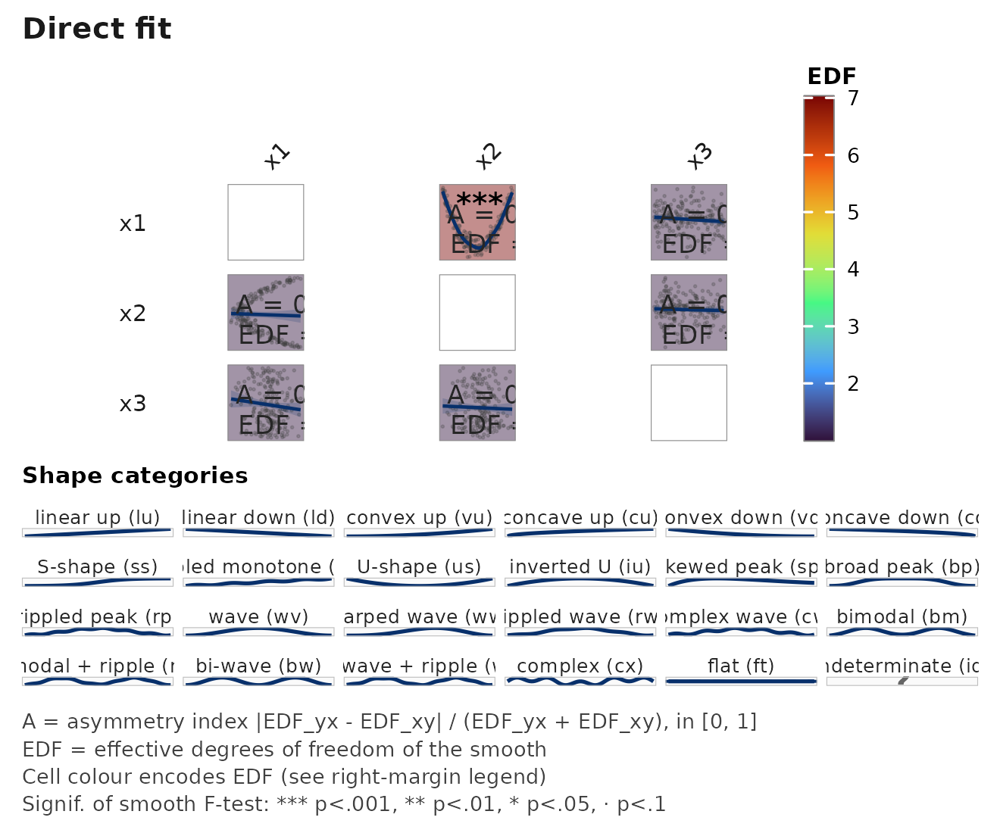
Colourblind-safe choices:
-
Sequential:
viridis(default),magma,inferno,plasma,cividis,mako,rocket,YlOrRd,YlGnBu,Blues,Greens. -
Diverging:
RdYlBu,RdBu,PuOr.
High-contrast but not colourblind-safe:
turbo, Spectral.
Handling missing data
# airquality has genuine NAs in Ozone and Solar.R
janusplot(airquality[, c("Ozone", "Solar.R", "Wind", "Temp")],
na_action = "pairwise")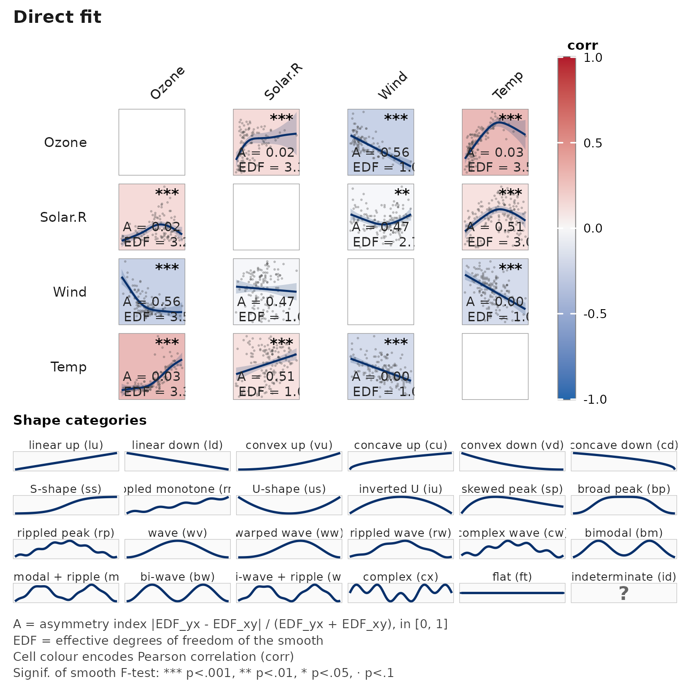
na_action = "pairwise" uses all rows for which
that pair is complete; "complete" restricts to
rows complete across every variable (matching listwise deletion).
Scaling up — order = "hclust"
For k large, reorder the axes by hierarchical clustering on |correlation|:
data(Boston, package = "MASS")
janusplot(Boston[, c("medv", "lstat", "rm", "age",
"indus", "nox", "dis")],
order = "hclust")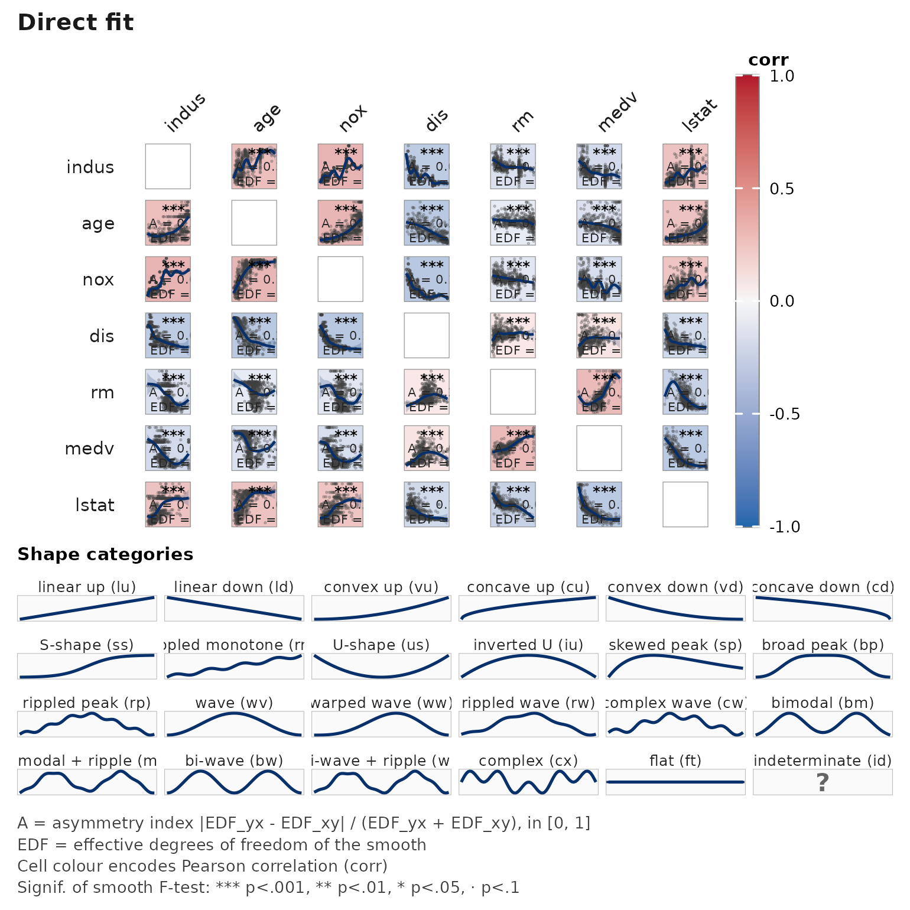
Programmatic access — janusplot_data()
Returns raw GAM fits and per-cell metrics without constructing a ggplot — useful for custom rendering or downstream analysis.
# Re-create the heteroscedastic example
n <- 400
het <- data.frame(
x = runif(n, 0, 5),
y = NA_real_
)
het$y <- 0.5 * het$x + rnorm(n, sd = 0.3 + 0.4 * het$x)
out <- janusplot_data(het, vars = c("x", "y"))
out$pairs[[1L]]$edf_yx
#> [1] 1.00021
out$pairs[[1L]]$edf_xy
#> [1] 6.157621
out$pairs[[1L]]$asymmetry_index
#> [1] 0.720527Shape metrics explained
Every fitted smooth is summarised by two continuous indices and two
discrete counts. These drive the 24-category classifier and appear as
columns in janusplot(..., with_data = TRUE)$data and as
fields on each entry of janusplot_data()$pairs.
Let f(x) be the fitted smooth on a dense grid of 200
equally-spaced points across the predictor range, with f'
and f'' the numerical first and second derivatives. Let
w(x) be the empirical density of the predictor on the same
grid, normalised to sum(w) = 1.
-
monotonicity_index(paper symbolM):M = sum(w * f') / sum(w * |f'|) in [-1, 1]+1means strictly increasing,-1strictly decreasing,0a non-monotone curve (bowl, dome, wave). -
convexity_index(paper symbolC):C = sum(w * f'') / sum(w * |f''|) in [-1, 1]+1means globally convex (bowl-up),-1globally concave (bowl-down),0inflection-dominated (S-curve, sine, flat).
Both indices are density-weighted so they describe the smooth
where the data actually live, not extrapolated tails, and are
scale-invariant: replacing y with a * y + b
leaves them unchanged.
-
n_turning_points— count of interior extrema (sign changes off'), robust to noise via lobe-mass weighting. -
n_inflections— count of interior curvature flips (sign changes off''), same robust counting.
Together the pair (n_turning_points, n_inflections)
drives the primary shape_category dispatch;
(monotonicity_index, convexity_index) disambiguate within
the monotone (0, 0) and single-extremum (1, 0)
cells. The full taxonomy with 2-letter codes, archetypes, and thumbnail
curves is available from janusplot_shape_hierarchy() and is
rendered as the standing legend below every janusplot()
call.
Tune the thresholds applied to these indices via
janusplot_shape_cutoffs(). See the shape-recognition-sensitivity
vignette for how faithfully the classifier recovers ground-truth shapes
across sample-size and noise regimes.
Derivative views: theoretical justification and applied use
Each matrix renders one quantity. display = "fit"
(default) shows the fitted smooth; display = "d1" shows ;
display = "d2" shows . A top-of-matrix title names the
mode, so side-by-side calls compare unambiguously. Orders beyond two are
not exposed — see Noise amplification below. Derivative CI
rendering is off by default; opt in with
derivative_ci = "pointwise" or
"simultaneous".
set.seed(2026L)
n <- 300L
xs <- runif(n, -pi, pi)
df <- data.frame(
x = xs,
y1 = xs + sin(3 * xs) + rnorm(n, sd = 0.15),
y2 = 0.5 * xs^2 + rnorm(n, sd = 0.8)
)
janusplot(df, display = "fit", show_shape_legend = FALSE)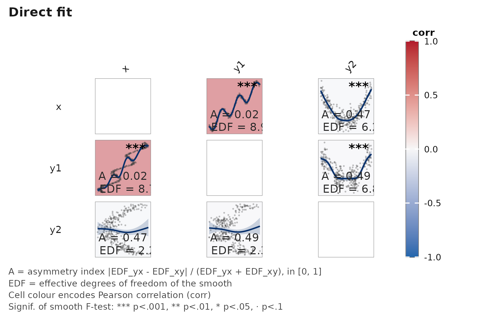
janusplot(df, display = "d1", show_shape_legend = FALSE)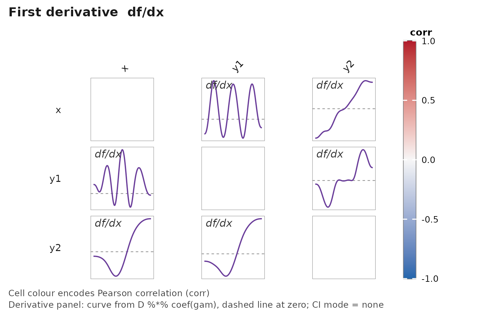
janusplot(df, display = "d2", show_shape_legend = FALSE)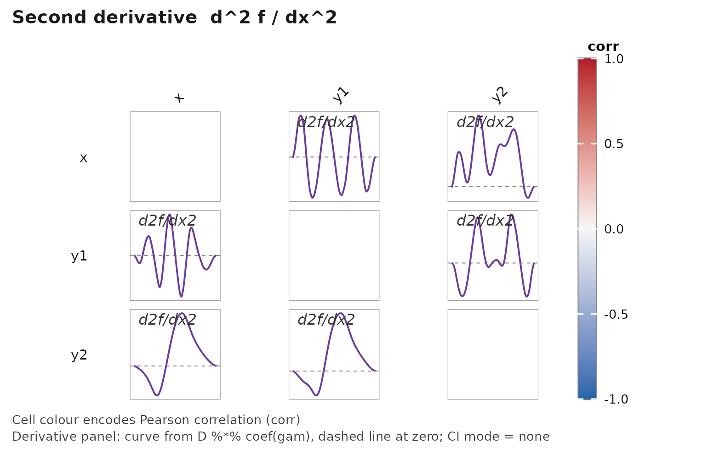
Turn on simultaneous bands — a single call gets the Monte Carlo critical multiplier per Simpson (2018):
janusplot(df, display = "d1",
derivative_ci = "simultaneous",
derivative_ci_nsim = 2000L,
show_shape_legend = FALSE)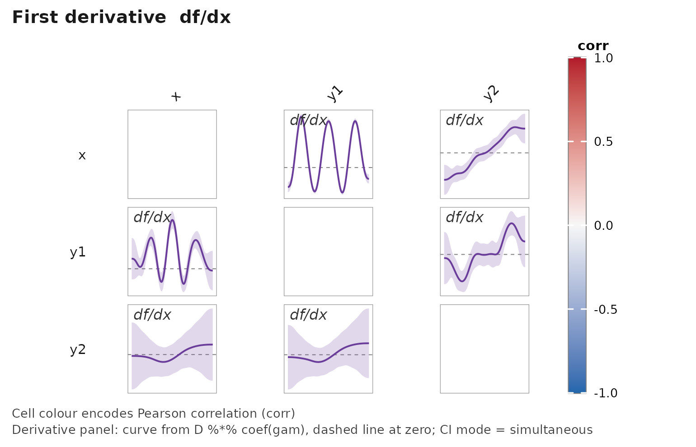
What derivatives reveal that the fit hides
The fitted smooth is a level description. Its derivatives are different statistical objects with their own interpretations:
- — the local rate of change of in . Zero crossings localise the turning points of ; the sign of gives the direction of monotonicity; the magnitude gives the sensitivity at the operating point . In control engineering this is literally the process gain that gain-scheduled controllers are built around (Rugh & Shamma, 2000; Leith & Leithead, 2000). In causal analysis of a continuous treatment it is the derivative of the dose–response curve , which Zhang & Chen (2025) argue is often the treatment-effect object of interest, not the curve itself.
- — the local curvature. Zero crossings localise the inflection points of ; a persistently positive second derivative flags accelerating growth, persistently negative flags saturation (diminishing returns). is the input to the convexity index defined earlier in this vignette, so the derivative panel exposes the local signal behind that scalar summary.
The asymmetric matrix layout sharpens this. janusplot()
fits both
and
,
so derivative panels on the two triangles answer genuinely different
questions: the upper triangle is “how steeply does
respond to a nudge in
at this operating point” (forward gain); the lower triangle is “how
steeply must
change to induce a unit change in
”
(inverse sensitivity). For an asymmetric process these do not transpose
into each other, and the directional asymmetry is a diagnostic the
symmetric correlation matrix cannot expose (Janzing & Schölkopf,
2010).
Estimation — the LP matrix
Let
denote the design (linear predictor) matrix of the fitted GAM evaluated
on the plotting grid
,
obtained from
predict(gam_fit, newdata = ..., type = "lpmatrix") (Wood,
2017, §7.2.4). With penalised posterior mean
and posterior
covariance
, we construct a
finite-difference operator
on the rows of
(central differences in the interior, second-order forward / backward
stencils at the endpoints) and read off
Pointwise
intervals are
.
This is the standard Wood (2017) construction, and is what
gratia::derivatives() implements in its default mode
(Simpson, 2014; Simpson, 2018). Columns of
corresponding to adjust terms held at typical values
contribute identical rows across the grid, so their finite differences
are zero and they drop out of both
and its variance — the derivative in the panel is therefore the
derivative of the partial smooth actually shown in the fit
panel, as expected.
For simultaneous intervals over the full grid (a stricter question
than pointwise, and what you want for formal feature localisation),
janusplot() implements the Monte Carlo construction of
Ruppert, Wand & Carroll (2003, §6.5), popularised for GAMs by
Simpson (2018): draw
for
and take the
quantile of
across the plotting grid
as a critical multiplier
on the pointwise SE, so the simultaneous band is
.
Opt in via derivative_ci = "simultaneous" on either
janusplot() or janusplot_data(); the default
is derivative_ci = "none" so that no CI is drawn by default
— derivative ribbons invite over-reading of local features and should be
a deliberate choice, not a default. The implementation uses
(see derivative_ci_nsim); Simpson (2018) uses
,
which is affordable if you need tighter quantile estimation.
Noise amplification and why we cap at
Finite differencing of raw data amplifies noise; penalised splines do
not eliminate that amplification, they trade it against bias via the
REML-selected smoothing parameter. mgcv’s default
thin-plate penalty is on
,
which directly regularises
and bounds (but does not penalise)
only via the basis rank (Wood, 2017, §5.3; Eilers & Marx, 1996). In
practice we find
is dominated by noise for
at moderate
,
and so janusplot refuses
by design. If you have a domain-specific reason to need a higher-order
derivative, specify a matching-order P-spline penalty explicitly
(Eilers, Marx & Durbán, 2015) and extract it yourself from
janusplot_data().
Applied use: gain estimation and dose–response
Two strands in which the asymmetric derivative view is not a cosmetic add-on but the analytical primitive the practitioner actually wants.
- Process-gain scheduling. In adaptive and gain-scheduled control, the controller is indexed by the local process gain (Rugh & Shamma, 2000). For a steady-state input-output dataset, is a direct data-driven estimate of , and its simultaneous CI tells the engineer whether the local gain is distinguishable from a reference gain over an operating envelope. The inverse panel is the feedforward-linearisation sensitivity; a large divergence between the two panels flags that a naive inverse controller will under-perform (Korda & Mezić, 2018). The matrix view makes a fleet of such pairs inspectable at once.
-
Derivative of the dose–response curve as the causal
estimand. For a continuous treatment
with unconfoundedness, the dose–response
and its derivative
are both estimable, and recent work (Zhang & Chen, 2025) argues
is often the more directly interpretable quantity — it answers “how much
does the expected outcome change per unit shift in treatment at this
dose?” This is structurally the same estimand as the process gain above;
the asymmetric-matrix derivative panel delivers both forward and
reverse-conditioned derivative curves in the same frame, which is a
direct diagnostic for Simpson’s-paradox-style conditioning reversals
(visible, for example, in the penguins
bill_depth_mmbody_mass_gpair oncespeciesis adjusted for).
References cited in this section
Eilers, P. H. C., & Marx, B. D. (1996). Flexible smoothing with B-splines and penalties. Statistical Science, 11(2), 89–121. https://doi.org/10.1214/ss/1038425655
Eilers, P. H. C., Marx, B. D., & Durbán, M. (2015). Twenty years of P-splines. SORT, 39(2), 149–186.
Janzing, D., & Schölkopf, B. (2010). Causal inference using the algorithmic Markov condition. IEEE Transactions on Information Theory, 56(10), 5168–5194. https://doi.org/10.1109/TIT.2010.2060095
Korda, M., & Mezić, I. (2018). Linear predictors for nonlinear dynamical systems: Koopman operator meets model predictive control. Automatica, 93, 149–160. https://doi.org/10.1016/j.automatica.2018.03.046
Leith, D. J., & Leithead, W. E. (2000). Survey of gain-scheduling analysis and design. International Journal of Control, 73(11), 1001–1025. https://doi.org/10.1080/002071700411304
Rugh, W. J., & Shamma, J. S. (2000). Research on gain scheduling. Automatica, 36(10), 1401–1425. https://doi.org/10.1016/S0005-1098(00)00058-3
Ruppert, D., Wand, M. P., & Carroll, R. J. (2003). Semiparametric Regression. Cambridge University Press.
Simpson, G. L. (2014). Simultaneous confidence intervals for derivatives of smooth terms in a GAM. From the Bottom of the Heap (blog post).
Simpson, G. L. (2018). Modelling palaeoecological time series using generalised additive models. Frontiers in Ecology and Evolution, 6, 149. https://doi.org/10.3389/fevo.2018.00149
Wood, S. N. (2017). Generalized Additive Models: An Introduction with R (2nd ed.). Chapman and Hall/CRC. https://doi.org/10.1201/9781315370279
Zhang, Y., & Chen, Y.-C. (2025). Doubly robust inference on causal derivative effects for continuous treatments. arXiv preprint [2501.06969].
Limitations
- Pairwise view, not conditional — always complement with a proper multivariate model.
- EDF depends on basis dimension
k; defaults are sensible but domain-specific tuning is encouraged. - The asymmetry index should not be interpreted causally without strong assumptions.
-
monotonicity_indexandconvexity_indexare scale-invariant inybut sensitive to the predictor-density weighting — they describe the smooth on the observed support ofx, not outside it. -
displayis scalar — a singlejanusplot()call renders a single quantity (fit, d1, or d2). To compare fit against derivative, issue two or three calls; each carries its own matrix-level title and, whenwith_data = TRUE, its owndisplay-tagged summary table. - Derivative panels show no confidence ribbon by
default (
derivative_ci = "none"). Opt in explicitly:"pointwise"for marginally-valid pointwise 95% bands,"simultaneous"for Simpson (2018) Monte Carlo bands valid for feature localisation. - Requesting
display %in% c("d1", "d2")raises the default prediction-grid resolution from 100 to 200 points, which slightly shifts the numeric shape-metric values (M,C, turning and inflection counts) reported alongside the fit. Shapes and asymmetry — the primary reading of the matrix — are robust to this drift;M,Cand the counts are secondary diagnostics. The precomputedshape_sensitivity_demodataset was generated undern_grid = 100and is preserved as-is for reproducibility.
Citation
citation("janusplot")
#> To cite janusplot in publications use:
#>
#> Moldovan M (2026). _janusplot: Asymmetric Smoothed-Association
#> Matrices via GAM Fits_. R package version 0.0.0.9001,
#> <https://github.com/max578/janusplot>.
#>
#> Moldovan M (2026). "Beyond Pearson: Visualising Asymmetric Non-linear
#> Associations with Generalised Additive Models." _The R Journal_. In
#> preparation.
#>
#> To see these entries in BibTeX format, use 'print(<citation>,
#> bibtex=TRUE)', 'toBibtex(.)', or set
#> 'options(citation.bibtex.max=999)'.